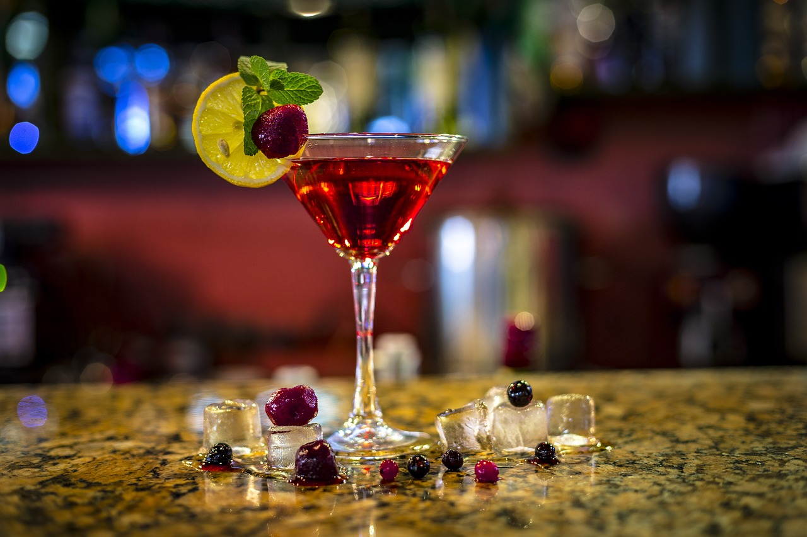

Un poco de historia...

Los inicios del cóctel
Como muchas otras profesiones, es complicado saber cuándo nació realmente la coctelería. Los antecedentes dan lugar a confusión entre realidad y leyenda, entre cóctel y brebaje. Se dice que, en sus inicios, los cócteles eran estrictamente digestivos. Se mezclaban alcoholes y hierbas para facilitar digestiones pesadas. También se dice que los farmacéuticos antiguos los usaban con fines medicinales, para levantar el ánimo de sus pacientes. Podemos datar el origen del cóctel, o al menos aquél que más se parece al de nuestros días, en 1862. Fue entonces cuando el bartender estadounidense Jerry Thomas popularizó en su país el concepto de cóctel como la mezcla de alcoholes y jugos de frutas con creatividad y espectáculo. Por ello, es considerado como el padre de la mixología americana.
La edad de oro de la coctelería
Los cócteles empezaron a despuntar como bebida recreativa a finales del siglo XIX en Occidente. Pero fue durante la Ley Seca, en los años 20 en Estados Unidos, cuando alcanzó su punto álgido. Como estaba terminantemente prohibido beber cualquier tipo de alcohol, en la clandestinidad se empezaron a sofisticar las bebidas mezclando los licores con zumos de frutas. Se convirtió entonces en el trago de moda entre las clases altas de Europa también. Sin embargo, poco después la Segunda Guerra Mundial relegó al cóctel a círculos más exclusivos y, consecuentemente, perdió popularidad. La falta de recursos que asoló a Occidente, no permitía el desarrollo de bebidas tan sofisticadas. Hacia la segunda mitad del siglo XX, con la bonanza económica de la que gozaba EEUU y ya más que superada la Ley Seca, empezó a resurgir su protagonismo en bares, pubes y restaurantes. El desarrollo del siglo XX en los países occidentales también conllevó una profesionalización de la labor de coctelero.
La profesión de coctelero hoy en día
Actualmente, la coctelería ya es considerada todo un arte y los barmans, sus artistas. La profesionalización ha hecho que se estudie en escuelas de hostelería y hasta en universidades, y se conozca cada vez más como mixología. También gracias a la cantidad de eventos y conferencias que se realizan alrededor de este arte. El conocimiento de esta disciplina crece con la comunicación dentro del sector. El cóctel ha ido evolucionando y agregando factores y fuentes de inspiración. Es interesante, por ejemplo, el valor geográfico que ha tomado este arte. Se estudia y adapta la cultura de cada país o región a través de sus bebidas, alcohólicas o no. Por ejemplo, la preferencia de los cócteles amargos en Italia, o el uso del coñac en los tragos de Francia. Incluso se habla a veces del género como un factor en la elección del cóctel. Los gustos entre hombres y mujeres cambian. Es así como, por ejemplo, las mujeres prefieren cócteles más dulces y delicados, como los Cosmopolitan o los Margaritas, mientras que los hombres se decantan más por los secos, fuertes o ácidos, como el Cuba Libre o el Long Island Ice Tea. Aun así, hay cócteles muy populares para ambos géneros, como el Mojito o la Caipirinha. Existe actualmente un abanico de posibilidades, recetas y variantes más grande que nunca. Y también una clasificación más definida, según si los cócteles son aperitivos, digestivos, reconstituyentes, refrescantes…O el tipo de decoración en los locales, elegante y atractiva, pero sin llegar a ser excesiva. Son cada vez más los aspectos que los profesionales de la coctelería deben dominar para completar la experiencia del cóctel. Hoy en día, la mayoría de bares o restaurantes del mundo ofrecen una gran variedad de cócteles. Algunos negocios se dedican de lleno a su preparación, acompañándola de espectáculo y ambiente. Incluso si ocupa un lugar menos distinguido en una carta de bebidas, sin lugar a dudas, se han convertido en un producto indispensable en la hostelería.